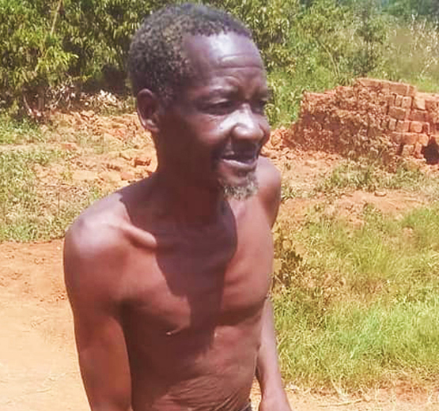
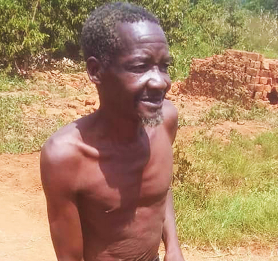
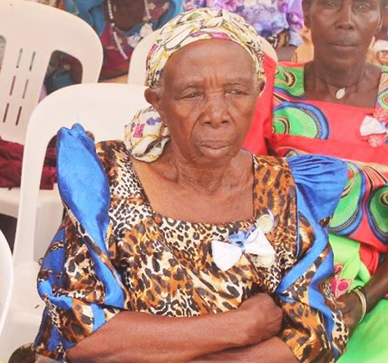
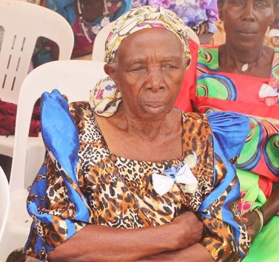

Raise your helping hand today by joining Lusi Namatovu Foundation in providing medical care, shelter, food, counselling and clothing to the elderly in remote towns across Uganda today.


The elderly were once young and strong. They worked hard to make a living and gave their best to raise their children by caring, protecting and nurturing them not forgetting their contribution to the society. Join us today in providing shelter, food, medical care and counselling to our senior citizens.
 

 



In many African countries, an individual is not entitled to government assistance after retirement unless they have worked for the government. Lusi Namatovu Foundation assists elders in need of;
We empower various communities in the further rural areas of Uganda thus promoting the right and wellbeing our old ones.
Many people in remote towns across Uganda are threatened by hunger. Thanks to our donor and voluteers, we feed and provide health care for them.
Approximately 36% of the population in villages live below the poverty line. The elderly are the most affected by insecurity and poor shelter.

Hello, My name is Samuel Ssebandeke, Founder and executive Director of Lusi Namatovu Homecare, A non profit organisation fighting hunger and empower youth. The less privileged elders need food, love and care. This project will provide meals to 42 destitute old aged persons. Every month we provide 5kg of rice, 3kg of sugar among others to 42 destitute elder neglected by their families. Due to poverty some families are not able to feed these elder persons. Among 42 poor elderly persons, some of them used to beg from their neighbor houses to feed themselves. Our little contribution to the elderly makes their world healthy and happy.
The 42 destitute elderly people are suffering from poor nutrition, lack of propel care and ill-health solution. The age group of these older people is from 65 to 85 years. The health conditions of those destitute elderly people has been improved. Most of them are having anemic problem due to lack of food and medical care yet the goverment of uganda has turned a blind eye. This microproject solves the problem by providing every month nutritious meals, clothing and medical care to 42 elderly people.
We provide Vegetarian meal, Meat, Milk, Rice, sugar, salt among others. Such meal are easy to digest and healthy too. Their health condition of destitute elderly persons has been improved. We offer them peer support so that they are free from worries.This will stop starvation among destitute elderly people in Rakai Districts of Uganda. 42 olderly people get timely nutritious food and medical care. Eldery persons living conditions & life span will increase. 42 old aged persons able to eat nutritious food and medicines in time without depending on others. The perception of the community on caring old aged people will build positively.
Raise a helping hand by donating towards any of our programs and bring lasting impacts to the vulnerable senior citizens. You can also buy food, clothes, mattress or provide medical care through Lusi Namatovu Foundation
You can partner with Lusi Namatovu Foundation and be part of the life-changing activities and Programs we are doing to the elderly citizens in Uganda.Your contribution will genuinely appreciated.
Volunteer with Lusi Namatovu Foundation in Uganda and join us intransforming the lives of out old citizens. At Lusi Namatovu Foundation, we turn lost hopes to those under our care and in the communities we reach out to.
{kind=link}
{kind=link}
{kind=link}
{kind=link}
{kind=link}
{kind=link}
{kind=link}
{kind=link}